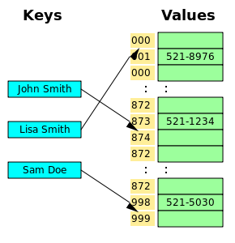
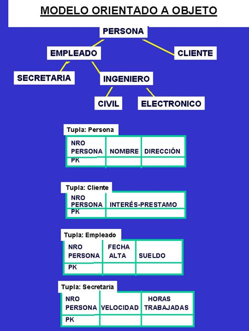

UNIVERSIDAD AUTÓNOMA DE
CHIHUAHUA
Facultad de Ingenieria

|
|
UNIVERSIDAD AUTÓNOMA DE Facultad de Ingenieria |
|

Este documento HTML contiene una investigacion acerca de las Bases de Datos no Relacionales. Se narra una breve historia de como surgio el termino y su paso a traves de los años, se explica el funcionamiento de la base de datos, donde SQL no es su principal lenguaje de consulta.
Al conocer su funcionamiento podremos comparar y conocer las ventajas y desventajas al utilizar dicho sistema en su gestion de datos. Se nombraran algunos sistemas importantes que implementan NoSQL.
Ademas en este mismo documento debemos aplicar todos los conceptos aprendidos de HTML vistos hasta hoy en el aula de clase
 noSQL (a veces llamado "no sólo SQL") es una amplia clase de sistemas de gestión de bases de datos que difieren del modelo
clásico del sistema de gestión de bases de datos relacionales (RDBMS) en aspectos importantes, el más destacado es que no usan SQL
como el principal lenguaje de consultas. Los datos almacenados no requieren estructuras fijas como tablas, normalmente no soportan operaciones
JOIN, ni garantizan completamente ACID (atomicidad, consistencia, aislamiento y durabilidad), y habitualmente escalan bien horizontalmente.
Los sistemas NoSQL se denominan a veces "no sólo SQL" para subrayar el hecho de que también pueden soportar lenguajes de consulta de tipo SQL.
noSQL (a veces llamado "no sólo SQL") es una amplia clase de sistemas de gestión de bases de datos que difieren del modelo
clásico del sistema de gestión de bases de datos relacionales (RDBMS) en aspectos importantes, el más destacado es que no usan SQL
como el principal lenguaje de consultas. Los datos almacenados no requieren estructuras fijas como tablas, normalmente no soportan operaciones
JOIN, ni garantizan completamente ACID (atomicidad, consistencia, aislamiento y durabilidad), y habitualmente escalan bien horizontalmente.
Los sistemas NoSQL se denominan a veces "no sólo SQL" para subrayar el hecho de que también pueden soportar lenguajes de consulta de tipo SQL.
Por lo general, los investigadores académicos se refieren a este tipo de bases de datos como almacenamiento estructurado, término que abarca también las bases de datos relacionales clásicas. A menudo, las bases de datos NoSQL se clasifican según su forma de almacenar los datos, y comprenden categorías como clave-valor, las implementaciones de BigTable, bases de datos documentales, y Bases de datos orientadas a grafos.
Se puede decir que la aparición del término NoSQL aparece con la llegada de la web 2.0 ya que hasta ese momento sólo subían contenido a la red aquellas empresas que tenían un portal, pero con la llegada de aplicaciones como Facebook, Twitter o Youtube, cualquier usuario podía subir contenido, provocando así un crecimiento exponencial de los datos.
Es en este momento cuando empiezan a aparecer los primeros problemas de la gestión de toda esa información almacenada en bases de datos relacionales. En un principio, para solucionar estos problemas de accesibilidad, las empresas optaron por utilizar un mayor número de máquinas pero pronto se dieron cuenta de que esto no solucionaba el problema, además de ser una solución muy cara. La otra solución era la creación de sistemas pensados para un uso específico que con el paso del tiempo han dado lugar a soluciones robustas, apareciendo así el movimiento NoSQL.
Por lo tanto hablar de bases de datos NoSQL es hablar de estructuras que nos permiten almacenar información en aquellas situaciones en las que las bases de datos relacionales generan ciertos problemas debido principalmente a problemas de escalabilidad y rendimiento de las bases de datos relacionales donde se dan cita miles de usuarios concurrentes y con millones de consultas diarias.
El termino NOSQL cobija varios productos, varios conceptos relacionados sobre almacenamiento, gestión de datos y datos voluminosos. Es lo que denominan un término “umbrella” (“sombrilla”) porque cobija varias elementos.
Carlo Strozzi usó el término NoSQL en 1998 para referirse a su base de datos. Era una base de datos open-source,
ligera, que no ofrecía un interface SQL, pero sí seguía el modelo relacional1 (Strozzi sugiere que,
ya que el actual movimiento NoSQL Se sale completamente del modelo relacional, debería, por tanto, haberse llamado 'NoREL', o algo así.
)
Eric Evans, un empleado de Rackspace, reintrodujo el término NoSQL cuando Johan Oskarsson de Last.fm quiso organizar un evento para discutir bases de datos distribuidas de código abierto. El nombre intentaba recoger el número creciente de bases de datos no relacionales y distribuidas que no garantizaban ACID, atributo clave en las RDBMS clásicas.
Típicamente las bases de datos relacionales modernas han mostrado poca eficiencia en determinadas aplicaciones que usan los datos de forma intensiva, incluyendo el indexado de un gran número de documentos, la presentación de páginas en sitios que tienen gran tráfico, y en sitios de streaming audiovisual. Las implementaciones típicas de RDBMS se han afinado o bien para una cantidad pequeña pero frecuente de lecturas y escrituras o para un gran conjunto de transacciones que tiene pocos accesos de escritura. Por otro lado NoSQL puede servir gran cantidad de carga de lecturas y escrituras.
Implementaciones de NoSQL usadas en el mundo real incluyen los 3TB de los marcadores verdes de Digg (indicados para señalar las historias votadas por otros en la red social; aunque duró menos de 3 meses y fue abandonado); los 6 TB de la base de datos del “ENSEMBLE” de la Comisión Europea usado en los modelos de comparación y calidad del aire, y los 50 TB de la búsqueda de la bandeja de entrada de Facebook.
Las arquitecturas NoSQL frecuentemente aportan escasas garantías de consistencia, tales como consistencia de eventos o transaccional restringida a ítems únicos de datos. Algunos sistemas, sin embargo, aportan todas las garantías de los sistemas ACID en algunas instancias añadiendo una capa intermedia (como por ejemplo, AppScale o CloudTPS). Hay dos sistemas que han sido desplegados y que aportan aislamiento snapshot para almacenamientos de columna: El sistema Percolator de Google (basado en el sistema BigTable) y el sistema transaccional de Hbase desarrollado por la universidad de Waterloo. Estos sistemas, desarrollados de forma independiente, usan conceptos similares para conseguir transacciones ACID distribuidas de múltiples filas con garantías de aislamiento snapshot para el sistema subyacente de almacenamiento en esa columna, sin sobrecarga extra en la gestión de los datos, despliegue en el sistema de middleware, ni mantenimiento introducido por la capa de middleware.
Bastantes sistemas NoSQL emplean una arquitectura distribuida, manteniendo los datos de forma redundante en varios servidores, usando frecuentemente una tabla hash distribuida. De esta forma, el sistema puede realmente escalar añadiendo más servidores, y el fallo en un servidor puede ser tolerado.
Algunas de las diferencias más destacables que nos podemos encontrar entre los sistemas NoSQL y los sistemas SQL están:
Dependiendo de la forma en la que almacenen la información, nos podemos encontrar varios tipos distintos de bases de datos NoSQL. Veamos los sistemas más utilizados.

Son el modelo de base de datos NoSQL más popular, además de ser la más sencilla en cuanto a
funcionalidad. En este tipo de sistema, cada elemento está identificado por una llave única, lo que permite
la recuperación de la información de forma muy rápida, información que habitualmente está almacenada
como un objeto binario (BLOB). Se caracterizan por ser muy eficientes tanto para las lecturas como para las
escrituras.
Algunos ejemplos de este tipo son Cassandra, BigTable o HBase.
 Este tipo almacena la información como un documento, generalmente utilizando para ello una estructura
simple como JSON o XML y donde se utiliza una clave única para cada registro. Este tipo de implementación
permite, además de realizar búsquedas por clave-valor, realizar consultas más avanzadas sobre el
contenido del documento.
Este tipo almacena la información como un documento, generalmente utilizando para ello una estructura
simple como JSON o XML y donde se utiliza una clave única para cada registro. Este tipo de implementación
permite, además de realizar búsquedas por clave-valor, realizar consultas más avanzadas sobre el
contenido del documento.
Son las bases de datos NoSQL más versátiles. Se pueden utilizar en gran cantidad de proyectos, incluyendo muchos
que tradicionalmente funcionarían sobre bases de datos relacionales.
Algunos ejemplos de este tipo son MongoDB o CouchDB
 En este tipo de bases de datos, la información se representa como nodos de un grafo y sus relaciones con
las aristas del mismo, de manera que se puede hacer uso de la teoría de grafos para recorrerla. Para sacar
el máximo rendimiento a este tipo de bases de datos, su estructura debe estar totalmente normalizada, de
forma que cada tabla tenga una sola columna y cada relación dos.
En este tipo de bases de datos, la información se representa como nodos de un grafo y sus relaciones con
las aristas del mismo, de manera que se puede hacer uso de la teoría de grafos para recorrerla. Para sacar
el máximo rendimiento a este tipo de bases de datos, su estructura debe estar totalmente normalizada, de
forma que cada tabla tenga una sola columna y cada relación dos.
Este tipo de bases de datos ofrece una navegación más eficiente entre relaciones que en un modelo relacional.
Algunos ejemplos de este tipo son Neo4j, InfoGrid o Virtuoso

En una base de datos orientada a objetos, la información se representa mediante objetos como los presentes en la programación
orientada a objetos. Cuando se integra las características de una base de datos con las de un lenguaje de programación
orientado a objetos, el resultado es un sistema gestor de base de datos orientada a objetos (ODBMS, object database management
system). Un ODBMS hace que los objetos de la base de datos aparezcan como objetos de un lenguaje de programación en uno o
más lenguajes de programación a los que dé soporte. Un ODBMS extiende los lenguajes con datos persistentes de forma transparente,
control de concurrencia, recuperación de datos, consultas asociativas y otras capacidades.
Las bases de datos orientadas a objetos se diseñan para trabajar bien en conjunción con lenguajes de programación orientados a
objetos como Java, C#, Visual Basic.NET y C++. Los ODBMS usan exactamente el mismo modelo que estos lenguajes de programación.
Los ODBMS son una buena elección para aquellos sistemas que necesitan un buen rendimiento en la manipulación de
tipos de dato complejos.
Algunos ejemplos de este tipo de bases de datos son Zope, Gemstone o Db4o
Al termino de esta investigacion el alumno puede comprender la historia, la estrucutura y diferencias que existen entre una base de datos relaciona y una NO relacional, y tiene la capacidad de elegir el tipo de sistema a utilizar cuando maneje datos. Ademas debe conocer si no es que todos, la mayoria de las estructuras, etiquetas, comandos, estilos, atributos y propiedades de HTML que se han visto a lo largo del curso.
1.Wikipedia. Fundación Wikimedia, Inc., "NoSQL" 29 de Junio del 2015 https://es.wikipedia.org/wiki/NoSQL
2.William Díaz Sepúlveda. Bases de datos NOSQL ,"BASES DE DATOS NOSQL: LLEGARON PARA QUEDARSE" 27 de Mayo del 2013 http://basesdedatosnosql.blogspot.mx
3.Hugo González. Academia de Tecnologías de la Información y Telemática, "Bases de datos NoSQL" 17 de Noviembre del 2011http://atit.upslp.edu.mx/~hugo/presentaciones/2011--noSQL--SemanaUPSLP.pdf
4.LinuxParty. LinuxParty Team, "5 Pros y 5 contras de cinco bases de datos NoSQL " 109 de Enero del 2011 http://www.linux-party.com/index.php/89-basesdedatos/6599-5-pros-y-5-contras-de-cinco-bases-de-datos-nosql-